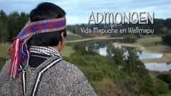

Gerardo Berrocal
Mapuche · Chile
Land references on the atlas: Wallmapu
Films 16

Lafkenmapu Ñi Dungun 2007
Director · Documentary
Watch · youtube.com ↗Credit source · adkimvn.wordpress.com ↗On the map

KVKAÑWE – Pewenche Adkvnugvn (Quinquen – Autonomía Pehuenche) 2010
Director · Documentary
Lifko Mapu – Territorio de Aguas Limpias 2010
Director · Documentary

Luchando por Nuestros Derechos – El Juicio por el Caso Peaje Quino 2012
Director · Documentary
Watch · youtube.com ↗Credit source · adkimvn.wordpress.com ↗On the map
CHEWKEPVLLV, Recuperación Territorial en el Aylla Rewe Budi 2013
Director · Documentary
TRANGOL, La Recuperación 2013
Director · Documentary · Short
Watch · youtube.com ↗Credit source · miradanativa.org ↗On the map

REWE NGUIÑIWE, Aylla Rewe Budi 2014
Director · Documentary · Short
Watch · youtube.com ↗Credit source · miradanativa.org ↗On the map
Portawe Lelfvn, Territorio Espiritual de la Vida Mapuche 2016
Co-director with ADKIMVN · Documentary · Mapudungun

Admongen, Vida Mapuche en Wallmapu. Ep. 3: Luis Tori, Werken 2017
Co-director with Millarrewe Huilcaman · Documentary
Admongen: Mapuche Life in Wallmapu. Ep. 5: David Nahuelhual, Werken 2017
Co-director with Millarrewe Huilcaman · Documentary
ELUWUN, Camilo Catrillanca 2018
Director · Documentary · Short
Watch · youtube.com ↗Credit source · miradanativa.org ↗On the map
Mawizache ñi Zugun, La Voz de la Gente de las Montañas 2020
Co-director with ADKIMVN · Documentary · Short
AWKA KULLIN, Nacidas del Barro 2024
Co-director with Ayllinray Berrocal and Millarewe Huilcaman · Documentary · Short
Watch · youtube.com ↗Credit source · ellugarquehabitamos.org ↗On the map
Inkaleyiñ Taiñ Kalafken (Defendamos el lago Kalafken) 2024
Co-director with ADKIMVN and Ayllinray Berrocal · Documentary · Short
Watch · youtube.com ↗Credit source · miradanativa.org ↗On the map
Sources
- reframe.sussex.ac.uk ↗ · Mediático / University of Sussex — original filmmaker interview — “University-hosted original interview explicitly introduces him as a Mapuche director from Wallmapu, Chile. Original filmmaker interview discusses his named film Wallmapuche1999 and his directing pract”
- adkimvn.wordpress.com ↗ — “Producer credits realización jointly to GerardoBerrocal and MillarreweHuilcaman; gives2017. Cinechile separately labels both directors.”
- cinechile.cl ↗ — “Film entry explicitly lists GerardoBerrocal and MillarreweHuilcaman under Dirigida por,2017.”
- miradanativa.org ↗ — “Named film directors; ADKIMVN production”
- miradanativa.org ↗ · MIR_TREN
Cite this page
MLA
“Gerardo Berrocal.” Indigenous Cinema Atlas: Abya Yala and Turtle Island, created by John Kennedy Godoy, University of Colorado Boulder, 2026, https://jwilliamkennedy.github.io/abya-yala-film-atlas/beta/maker/SAB2-20261014-2501b24c169e.html. Accessed .
Chicago
Godoy, John Kennedy. “Gerardo Berrocal.” Indigenous Cinema Atlas: Abya Yala and Turtle Island. University of Colorado Boulder, 2026. https://jwilliamkennedy.github.io/abya-yala-film-atlas/beta/maker/SAB2-20261014-2501b24c169e.html.
Identity is recorded only from the filmmaker’s own words or an explicit biographical source; it is never inferred from a film’s subject, language or setting. Images remain with their rights holders.